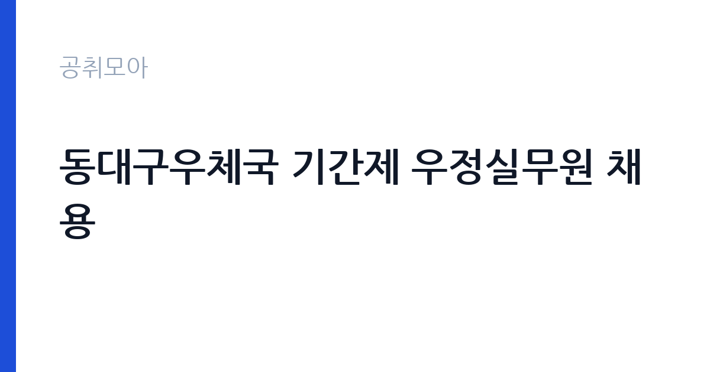

[국가기관] 동대구우체국 기간제 우정실무원 채용
과학기술정보통신부 우정사업본부 경북지방우정청 동대구우체국 · 대구 · 마감 2026-11-06 (D-9) · 출처 나라일터

한눈에 보는 모집 조건
| 기관 | 과학기술정보통신부 우정사업본부 경북지방우정청 동대구우체국 |
|---|---|
| 공고명 | 동대구우체국 기간제 우정실무원 채용 |
| 고용형태 | 기간제 |
| 근무지 | 대구 |
| 게시일 | 2026-10-28 |
| 마감일 | 2026-11-06 (D-9) |
지원자격, 이렇게 읽으세요
- 우정실무원 1명
- 접수 ~2026-11-06 마감
- 세부 조건은 원문 공고문 확인
기간제 근로자는 근로계약 기간이 정해진 신분입니다. 계약 기간과 갱신 가능 여부가 근로계약서에 명시되며 기간 만료 시 근로관계가 종료됩니다. 결원 보충이나 특정 사업 기간에 맞춰 채용되는 경우가 많아 업무 범위가 명확합니다. 이번 공고는 과학기술정보통신부 우정사업본부 경북지방우정청 동대구우체국에서 직접 진행하는 자체 전형으로, 응시자격과 제출서류는 공고문에 항목별로 제시됩니다. 응시 자격은 공고문의 응시자격 항목에 직급별로 나뉘어 제시됩니다. 학력·경력·자격 요건을 모두 충족해야 하며 하나라도 빠지면 서류에서 탈락합니다. 경력은 증명서로 입증해야 하므로 재직증명서와 경력증명서를 미리 준비하십시오. 우대 사항은 가점으로 반영되므로 해당 여부를 확인해 증빙을 붙여야 합니다. 결격사유 조회와 신원 확인 절차가 공통으로 적용됩니다. 서류는 접수 마감 이후 보완이 되지 않으므로 자격 요건과 증빙 서류를 마감 전에 모두 갖춰야 합니다. 공고문에 명시된 우대 사항은 해당 여부를 확인해 증빙을 첨부해야 가점이 반영됩니다. 자격증은 유효 기간과 등록 상태를 확인해야 합니다. 갱신이 필요한 자격이라면 갱신 여부를 먼저 점검하십시오.
이 공고의 포인트
이 공고의 첫 번째 포인트는 고용 형태입니다. 계약 기간이 정해져 있어 근무 종료 시점이 명확합니다. 그만큼 짧은 기간에 어떤 실적을 남길지가 중요해집니다. 두 번째는 업무 범위가 명확하다는 점입니다. 현장 실무 직무로 채용되므로 배치 이후 담당 업무가 크게 흔들리지 않습니다. 세 번째는 근무지입니다. 대구 지역 근무로 수도권 공고에 비해 지원자 분포가 넓지 않아 상대적으로 경쟁이 분산되는 경우가 있습니다. 채용 규모가 크지 않아 면접 비중이 높은 전형이 될 가능성이 있습니다. 같은 직무로 함께 올라온 공고 10건 가운데 마감이 중간에 위치하므로 다른 공고와 일정이 겹치는지 확인하십시오. 다만 선발 인원이 1명으로 많지 않아 자격을 갖춘 지원자가 몰리면 경쟁률이 높아질 수 있습니다.
전형은 어떻게 진행되나
서류전형과 면접전형 외에 직무수행능력 평가가 붙는 경우가 있습니다. 평가 방식은 공고문에 구체적으로 적혀 있으므로 어떤 항목에 배점이 높은지 먼저 파악하십시오. 면접에서는 지원 동기보다 실제 업무 경험에 대한 질문이 많고, 답변의 구체성이 평가를 가릅니다. 전형 일정은 서류 마감 이후 빠르게 진행되므로 연락 가능한 번호를 정확히 기재하고 문자와 메일을 수시로 확인해야 합니다. 최종 단계에서는 결격사유 조회와 신체검사가 진행됩니다. 전형 일정이 공고문에 날짜로 명시되어 있으니 달력에 옮겨 두고 준비하십시오.
원문에서 확인한 전형 방식
1. 채용분야: 기간제 우정실무원 2. 채용인원: 1명 3. 근무 예정지: 동대구우체국(대구광역시 동구 동촌로 1) 4. 업무내용: 우편물 구분 및 교부 5. 근무형태: 전일제(09:00~18:00) / 주 5일 6. 원서접수기간: 2026. 10. 28.(수) ~ 2026. 11. 6.(금) 7. 면접일자: 2026. 11. 11.(수) 8. 합격자 발표: 2026. 11. 12.(목) 9. 채용기간: 2026. 11. 16.(월) ~ 2026. 12. 31.(목) 10. 응시방법: 원서접수기간 내에 계약신청서류(붙임 참조) 제출 11. 문의처: 053-940-1972
이런 분께 추천해요
- 공고 직무와 관련된 경험이 있는 분
- 기관의 사업에 관심을 갖고 사전 조사를 해온 분
- 정해진 절차와 기한을 지킬 수 있는 분
지원 전 체크리스트
- 응시자격 요건과 경력 기준을 충족하는가 — 경력은 증명서로 입증해야 합니다
- 계약 기간과 근무 시작일·종료일을 확인했는가
- 제출서류 목록을 모두 준비했는가 — 누락 시 서류 단계에서 탈락합니다
- 접수 마감 2026-11-06 이전에 접수 방식을 확인해 제출했는가
모집 일정과 제출 타이밍
접수 마감은 2026-11-06이고 공고는 2026-10-28에 게시되었습니다. 준비 기간 9일 안에 서류 작성, 증빙 발급, 접수를 모두 마쳐야 하므로 주말을 포함해 일정을 미리 나누는 것이 좋습니다. 특히 경력 기술서나 직무수행계획서를 요구하는 공고는 작성에 시간이 걸리므로 첫날 초안을 잡으십시오. 서류 합격자 발표와 면접 사이 간격이 짧은 경우가 많아 면접 예상 질문은 서류 제출 전에 정리해 두는 편이 유리합니다. 마감 직전에는 접속이 몰리므로 여유를 두고 제출하십시오. 접수 첫날에 몰리면 시스템 접속이 지연될 수 있으므로 오전 시간대 제출이 안전합니다. 대구 근무지는 도심 접근성이 좋은 편이지만 시설에 따라 외곽 배치가 있을 수 있습니다. 마감까지 2주 안팎이 있어 준비할 시간은 있지만 미루면 촉박해집니다. 선발 인원이 한두 명 수준이라 지원자 개개인의 서류 완성도가 그대로 평가에 반영됩니다.
직무 이해하기: 국가기관
우체국은 우정사업본부 산하에서 우편물 접수와 배달, 금융 서비스를 함께 운영하는 국가기관입니다. 지방우체국은 지역 단위로 집배 구역을 나눠 운영하며, 인력이 부족한 구역은 상시계약이나 기간제로 보충합니다. 우편물 물량은 명절과 연말에 몰리고, 폭설이나 집중호우 때는 배달 일정 조정이 필요합니다. 이 공고의 직무는 기관이 맡은 사업을 현장과 사무 양쪽에서 수행하는 실무입니다. 담당 업무는 배치 부서에 따라 정해지며, 문서 작성과 자료 정리 같은 사무 업무와 현장 확인·지원 업무가 함께 붙는 경우가 많습니다. 업무 지침과 절차가 정해져 있어 그에 따라 처리하고 처리 결과를 기록으로 남깁니다. 민원이나 이용자를 대면하는 업무가 포함되면 응대 태도가 평가에 반영됩니다. 구체적인 업무 범위는 공고문의 직무 설명 항목에서 확인하십시오. 업무는 혼자 처리하기보다 부서 단위로 나눠 진행되므로 담당 구역과 협업 범위를 입사 초에 확인하는 것이 중요합니다. 현장 업무와 사무 업무의 비중은 기관의 사업 일정에 따라 계절별로 달라집니다.
자기소개서 작성 팁
자기소개서는 지원 동기, 직무 경험, 기여 방안의 세 축으로 구성하십시오. 첫 문단에서 지원 기관의 어떤 사업에 기여하고 싶은지 한 문장으로 밝히고 이후 경험을 구체적으로 서술합니다. 수치와 사례를 넣으면 설득력이 올라갑니다. 마지막에는 장기적으로 어떤 역할을 맡고 싶은지 방향을 제시하십시오. 문항별 글자 수 제한을 먼저 확인하고, 각 문항의 첫 문장에 결론을 배치하는 방식이 읽기 쉽습니다. 지원 동기는 기관의 어떤 사업에 기여하겠다는 한 문장으로 시작하고, 이어서 본인의 경험을 근거로 붙이십시오. 감점을 피하려면 다른 기관에 보낼 수 있는 범용 문장을 그대로 쓰지 않는 것이 중요합니다. 기관 이름과 사업명이 문장 안에 자연스럽게 들어가야 준비도가 드러납니다.
면접 준비 포인트
면접에서는 직무 이해도와 조직 적응력을 확인합니다. 지원한 기관이 하는 일을 어느 정도 알고 있는지, 맡은 업무를 어떻게 처리할 것인지 묻습니다. 구체적인 경험을 근거로 답하는 것이 중요하며 추상적인 포부만 나열하면 평가가 낮아집니다. 갈등 상황이나 업무 과부하 상황에서의 대응 방식도 자주 질문합니다. 답변은 상황, 판단, 조치의 순서로 정리하면 전달이 분명해집니다. 모르는 질문에는 모른다고 밝히고 확인 방법을 제시하는 편이 억지 답변보다 낫습니다. 마지막에는 근무 의사와 함께 2026-11-06 이후 일정에 언제든 응할 수 있다는 점을 전달하십시오. 모르는 질문에 추측으로 답하면 감점 요인이 되므로, 확인 후 답하겠다고 밝히는 편이 안전합니다.
급여·근무조건 읽는 법
과학기술정보통신부 우정사업본부 경북지방우정청 동대구우체국의 구체적인 보수 수치는 이 공고 원문의 처우 항목과 보수표에서 확인해야 합니다. 공시 자료로 확인되지 않은 금액은 이 글에서 추정해 제시하지 않습니다. 알리오 2025년 결산 공시 기준 공공기관 전체 일반정규직 1인당 평균보수는 7,376만 9천원, 신입사원 평균초임은 4,031만 6천원입니다(무기계약직 미포함). 보수는 채용 신분과 기관의 임금 규정에 따라 정해집니다. 공무직과 기간제는 기관 임금표를, 임기제공무원은 연봉등급제를 적용받습니다. 공고문에 금액이 제시되지 않은 경우에는 처우 항목이나 첨부된 보수표를 확인해야 합니다. 수당과 상여 포함 여부에 따라 실수령액이 달라집니다. 2026년 적용 최저임금은 시급 10,320원, 월 환산 2,156,880원(주 40시간·209시간 기준)입니다. 고용노동부 고시 제2025-47호로 확정된 금액입니다. 공고문에 금액이 제시되지 않은 항목은 원문 보수표나 처우 설명에서 확인해야 하며 확인되지 않은 수치는 쓰지 않는 것이 원칙입니다. 비교할 때는 월 급여뿐 아니라 상여·명절휴가비·복지포인트·초과근무수당까지 포함한 연간 총액으로 계산하십시오. 기간제라면 계약 기간 동안의 총액을, 무기계약이라면 호봉 상승과 정년까지의 누적 소득을 기준으로 판단하는 편이 정확합니다.
자주 묻는 질문
- 선발 인원은 몇 명인가요?
공고문 기준 1명입니다. 직종별로 인원이 나뉘는 경우가 있으니 모집분야 항목을 함께 확인하십시오. - 근무지는 어디인가요?
대구 지역의 과학기술정보통신부 우정사업본부 경북지방우정청 동대구우체국 소속 근무지입니다. 세부 주소와 출퇴근 조건은 원문 공고문에서 확인할 수 있습니다. - 보수는 얼마인가요?
채용 신분(기간제)과 기관 임금 규정에 따라 정해지며 구체적인 금액은 공고문 처우 항목에 제시됩니다. 금액이 공개되지 않은 경우에는 원문의 보수표를 확인하십시오.
함께 보면 좋은 공고
[국가기관] 2026년 제주세관 공무직(청소원, 여행자통관지원요원) 채용 공고 — 마감 2026-11-05[국가기관] 2026년 제4회 기상청 공무원 경력경쟁채용시험 공고 — 마감 2026-11-09[국가기관] 공주교육대학교 국가직공무원 행정9급 전입 희망자 모집 공고 — 마감 2026-11-10출처: 나라일터 공개정보를 바탕으로 공취모아가 정리한 안내글입니다. 모집 조건·일정은 변경될 수 있으니 지원 전 반드시 원문 공고문을 확인하세요. 본 글은 정보 제공용이며 합격을 보장하지 않습니다.